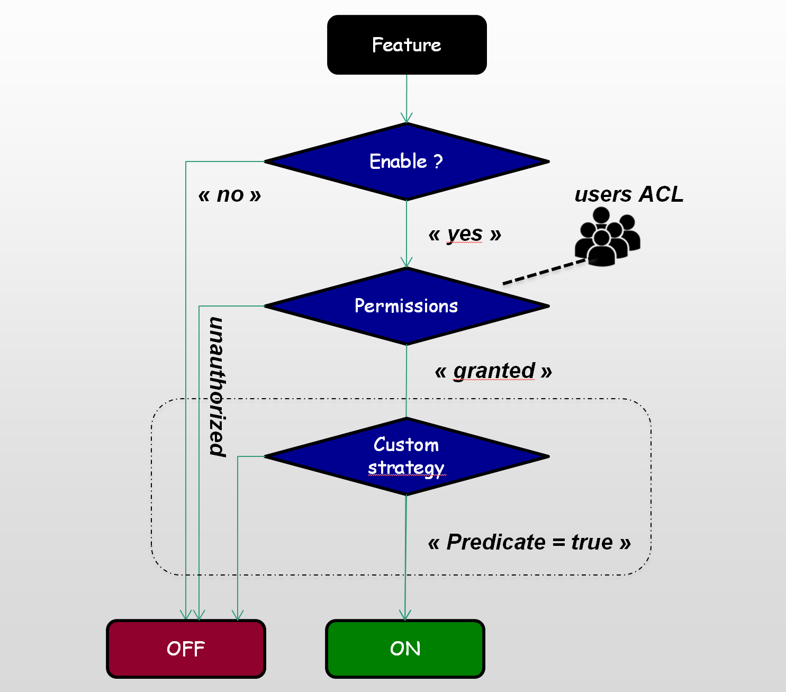
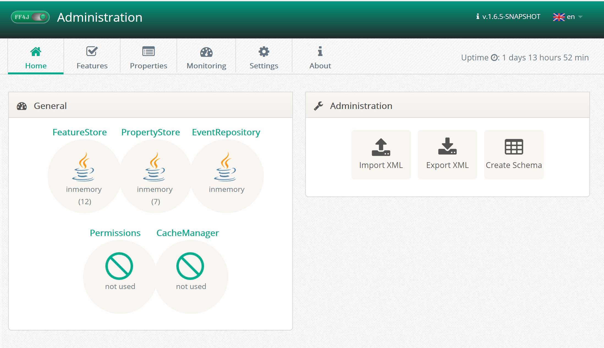
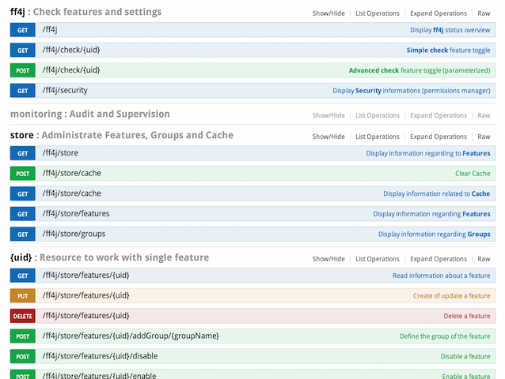
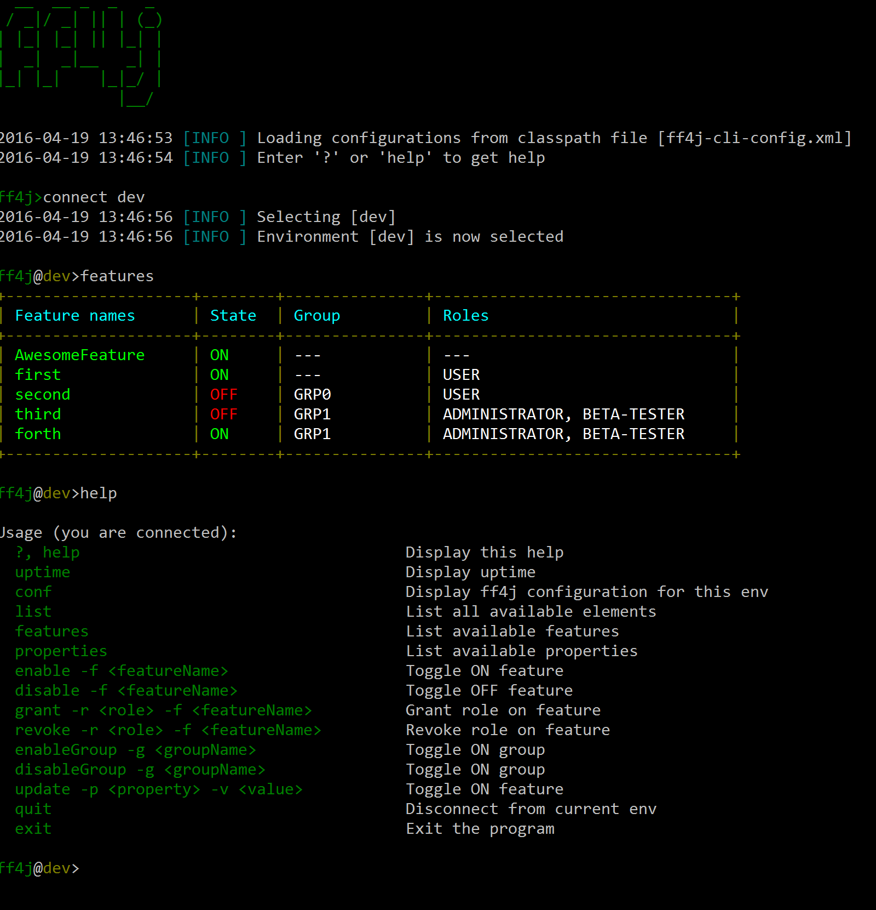

Feature Toggle
Enable. and disable features at runtime - no deployments. In your code implement multiple paths protected by dynamic predicates (if/then/else).

Canary Releases
Enable features not only with flag values but also drive access with roles and groups (Canary Release). Different frameworks supported starting by Spring Security.

Custom Rules
Create custom predicates to evaluate if features are enabled. Some provided like White listing,Time-based, expression-based or connect systems like Drools.

Web Console
Administrate FF4j (including features and properties) with the web UI. Packaged as a servlet in the library you will expose it in your backend applications. Almost 10 languages available..

Rest API
Operate FF4j through a WEB API. This is the way to go to use ff4j with others languages, specially javascript frontends.(also: leverage on FeatureStoreHttp to avoid microservices to directly connect to the DB.

Command Line Interface
To automate things or because web ports may be blocked (you know, production...) you can work through SSH using our Command Line Interface (cli), our Shell #devOps. It will interact directly with storages..
